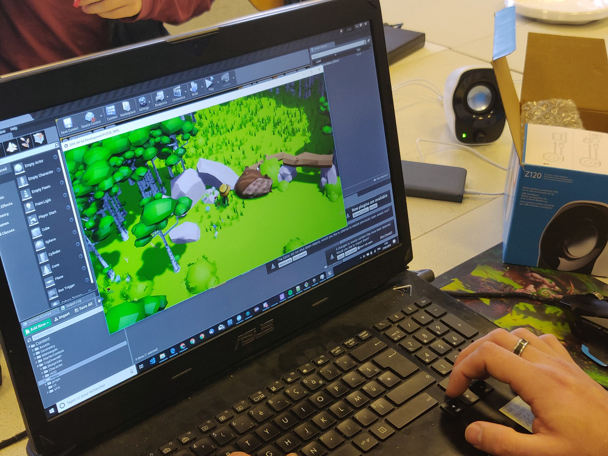

En maîtrisant les techniques de codage, un développeur ou une développeuse de jeux vidéo est un personnage essentiel dans la création d’un jeu. Engagé à tous les niveaux auprès de l’équipe de production, il/elle donne vie au jeu. Ce qui demande au programmeur de jeu vidéo une appétence pour l’informatique et des qualités pour travailler à plusieurs.
| Video pour prendre de connesaince | Voici la photo |
|  |